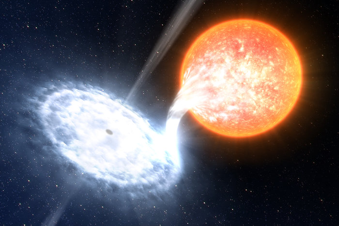

About
We are constantly working to finish the first version of the catalogue.
The aim of ©CatNoir project is to facilitate access to reliable information and provide the scientific community with a living catalog with the latest discoveries of galactic Black Holes.
If you found it useful do not forget to cite. If you have suggestions for the project or found any error, do not hesitate in contacting us.
Sample of galactic black holes
To download the complete dataset please click here.
Data visualization
Export citation
Rocha et al. (2025) in prep.